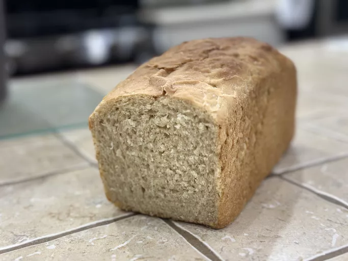

Sourdough Bread

Description
Sourdough Bread recipe, chosen from allrecipes.com for its low number of steps. With a rating of 4.6/5 stars. Prep time 20 minutes, cook time 40 minutes, additional time 8 hours, total time 9 hours, 20 servings, yield 2 (8x4 inch) loaves.
Ingredients
- 1 ½ cups warm water
- 1 cup sourdough starter
- 1/2 cup corn oil
- 1/2 cup white sugar
- 1 ½ teaspoons salt
- 6 cups bread flour
Steps
- Mix water, sourdough starter, oil, sugar, and salt together in a large bowl. Sift flour and add to the mixture. Grease or oil dough and place in an oiled bowl; cover and let rise overnight.
- The next day, grease two 8 x 4-inch loaf pans. Knead dough for 10 minutes; divide in half and place into prepared pans. Allow dough to double in size.
- Preheat the oven to 350 degrees F (175 degrees C).
- Bake loaves in the preheated oven until top is golden brown, about 40 to 45 minutes. Carefully tip loaves out of pan onto a work surface and gently tap the bottom of loaf. If it sounds hollow, bread is done.